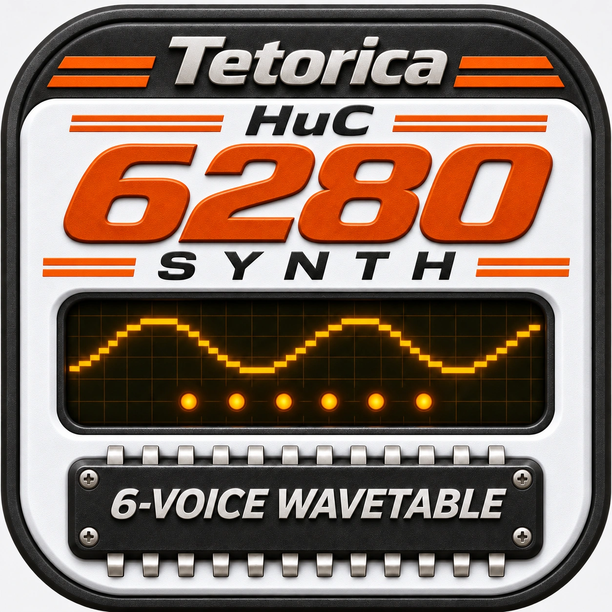

WAVETABLE · NOISE · LFO · DDA
Tetorica HuC6280 Synth
PC Engine · 6-channel wavetable · Draw a wave. Take the code.
Enable audio, then play the keyboard. Editing does not start audio.
?
Import a VGM / VGZ from Menu or add it to Files. The original file is kept under vgm/. Play runs one HuC6280 reference performance through Master; your edited instrument is kept. Code and song playback run one at a time. Pause stops at the heard position; Resume continues from there. Playback runs once. Drag the position bar and release to seek; Arrow keys and Home / End also work. Seek keeps Play / Pause and channel output switches, and refreshes the destination settings even with Auto update Off. From Stop it prepares the destination paused. Long seeks show preparation progress. Escape or Cancel seek keeps the previous position. While paused, choose a CH to audition its configured sound, or Synth to play your edited instrument. Capture to Synth keeps the song paused; Resume continues from the same position. While playing, choose a CH to edit its hardware or play keys into that channel; later VGM writes take over. Choose Synth to play or edit your own instrument without stopping the song. Loading another sound from a physical song CH still stops reference playback.
Seek cache retains a limited number of exact playback states in memory. Repeated moves can start nearby instead of rebuilding from the beginning. A different song or channel output setting clears these points. Stop keeps them; switching Cache off releases them. New points are collected while unedited playback or Seek advances. Manual changes are temporary: Seek restores the original VGM. Existing clean points remain available, but the edited run adds no new points. Cancelling Seek keeps the previous edited run.
Add a VGM / VGZ to hear a reference performance.
?
Synth edits your common round-robin instrument. A physical CH uses its own settings and keyboard voice in normal and Code modes. Choosing a view alone never copies settings to other channels. During VGM playback, CH1–CH6 edit hardware and use keys on that same reference chip. Already-generated audio is kept, and the controls follow the heard position. Software Envelope and PCM assets belong to Synth. DDA level and balance are editable, but its transient DAC value is not a keyboard sample; Pause freezes that position and lets the keyboard audition a known Wave, Noise or CH1 LFO pair through the same Master. Capture to Synth copies that configured sound for editing and saving, keeping the song paused. DDA samples and unknown Wave RAM cannot be reconstructed from this snapshot. Auto update follows at up to 20 times per second, and Off retains the last observation. Manual edits still get one update when their audio boundary is heard. Unknown Wave RAM stays blank; DDA shows the last recorded DAC code. These are sent settings, not oscillator-phase readback. Hardware LFO connects CH2 to CH1; Noise uses CH5 / CH6.
?
These software listening switches change only a channel's contribution to VGM song output. Wave, Noise, DDA and CH2 → CH1 hardware LFO keep running; Live and Capture still show the recorded settings. Already buffered audio plays first, then the new mix is heard. These switches keep their settings across Pause, Stop and song changes. Keyboard and Code output are separate.
Sounds from VGM
Choose a PC Engine VGM, then select a Wave, Noise, LFO or PCM sound to play.
Groups Wave or PCM sounds with identical data and settings, keeping the highest channel volume. Turn off to show every volume variant.
Opening a file keeps the current instrument. Select a sound to load it, then edit its settings or save a preset. Software Envelope is off for imported sounds.
Imports recorded Wave / Noise settings, complete CH1 + CH2 LFO pairs, supported PCM DAC streams and uniform direct DAC intervals with known boundaries. C4 plays the recorded LFO carrier pitch or PCM rate; LFO CH2 keeps its original period. Direct DAC imports are one-shots; Loop and the original note pitch are not inferred. Song timing, elapsed phase and later software envelopes are not replayed. Irregular or incomplete DAC intervals, unsupported streams and unknown settings are omitted with an explanation.
Live output after Master volume.
Sound source
Wavetable · 6 voices · round robin
MSM5205 ADPCM
PC Engine-style sample player · software transport controls
No sample loaded · choose a WAV or packed ADPCM file from Files.
Decoded ADPCM · mono
Rate and Loop apply on the next Play. Replay starts from the beginning.
?
This is your authored sample, shared with await useSoundChip("msm5205"). VGM playback has a separate reference decoder. WAV conversion is software: channels are mixed to mono, resampled at the selected Rate and encoded as four-bit ADPCM. Packed data uses the high nibble first and fits in 64 KiB. Rate changes playback speed and pitch together; Loop and Rate take effect at the next Play. Replacing a sample stops only this ADPCM player. Code loops and the HuC6280 continue. Code Stop keeps the loaded sample for another Play. Original files are saved in the project; the current ADPCM selection and playback settings are session state.
CD-DA
Under construction
Track controls are being prepared. Code can already use await useSoundChip("cdda"). Try examples/cdda.js in Files. CD-DA tracks are loaded separately from VGM.
Mixer
?
One session mix for Keyboard, Code and VGM. Levels use the same calibrated source gains as Playground; Reset returns those defaults. Master controls the final combined output. VGM changes follow already-rendered audio and invalidate affected Seek checkpoints. CD-DA is a Code audio-track source, separate from a VGM recording.
Performance input
Every key plays the selected source. No keyboard split.
Software performance · HuC6280 / MSM5205 / CD-DA share this output. Run: Ctrl/Cmd+Enter · Apply: Ctrl/Cmd+Shift+Enter.
Code is saved in Files. Loading a project never runs it automatically.
Console
?
Use await useSoundChip("huc6280"), "msm5205" or "cdda" and await its methods. MSM5205 plays ADPCM samples; CD-DA loads stereo PCM16 / 44.1 kHz WAV tracks or a manifest from Files. The Mixer applies to all three sources. CH1–CH6 share one PSG. Hardware LFO connects CH2 to CH1; Noise uses CH5 / CH6. noteOn / noteOff use the authored Software Envelope and DDA sample; keyOn / keyOff are raw hardware gates. Run starts fresh; Apply keeps context and named loops. Switching Keyboard / Code keeps the performance running. Typing in the editor changes code; click a control or the page background to play keys while Code stays visible. Stop fades the software output and restores your edited instrument. Wave uploads reset channel phase. Timing, envelope, DDA playback and liveFx are software features.